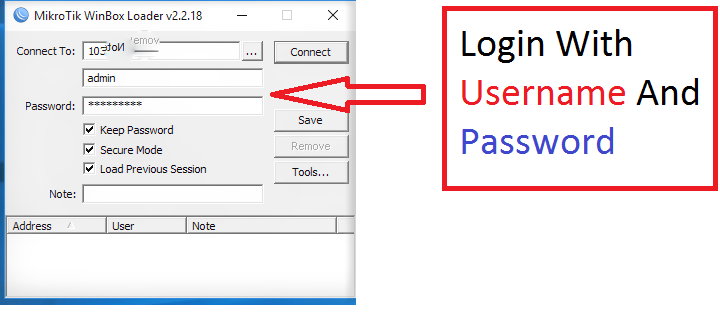

How To Update Mikrotik Router Manually?
Mikrotik Is Best Router Used in Internet And Networkin Industries.but Most Of peoples Don't Update Its Routerboard and Router.update router regularly may have less risk of DDOS attack and Better Router Performance.Its also improves stability and performance of mikrotik router. Today i show you How to update Mikrotik Router manually
Step By Step Process To update Mikrotik Router
Step-1 Open Mikrotik Through Winbox
First You need To Open Winbox and Login With Your Username and Password.If you can't Open Your mikrotik Through Ipv4 Try Opening Mikrotik Through Mac Adress Of Mikrotik
Step 2 Of Mikrotik Routerboard Update
Now click Quickset Of Mikrotik Admin Panel.As given In image
Step 3 Check For Updates Of your Mikrotik Routerboard
Now Click On check For Update.Please Don't Power Off Your Mikrotik During Update.Image Shows You Where You Find Check For Updates In mikrotik
Step 4 Download And Install Mikrotik Updates
Now CLick on Check for Updates and new window opened and then click on Download and Install Mikrotik Updates.Remember Please Don Not power Off Your mikrotik During installation Of Mikrotik Update.I am installing latest Routeros 6.38.After Installation Mikrotik Routerboard Automatically Rebooted.